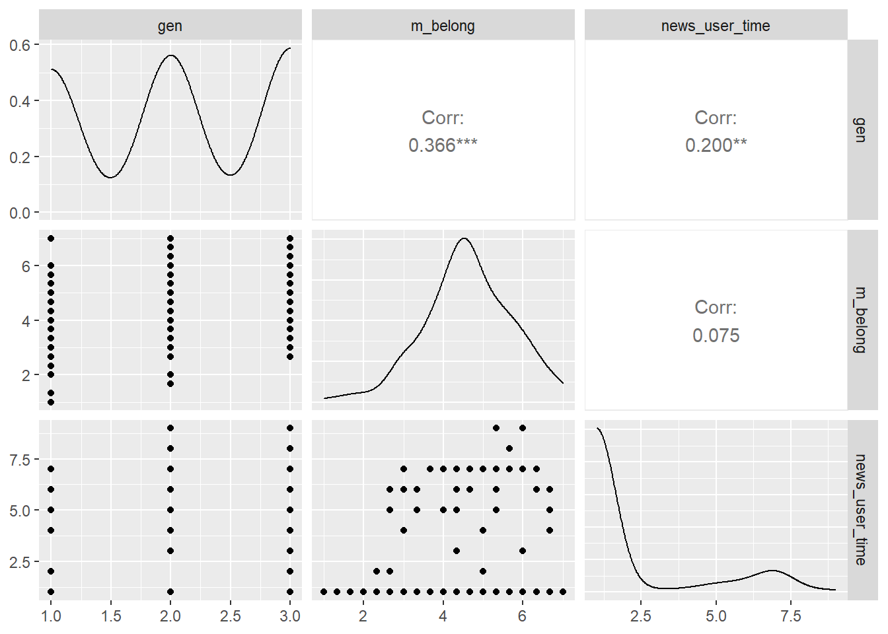

getwd()[1] "C:/data/textData/media_quality2"v.rds p.rds 파일을 작업디렉토리에 복사
getwd()[1] "C:/data/textData/media_quality2"R환경으로 이입
readRDS("v.rds") -> df
dim(df)[1] 263 42str(df)'data.frame': 263 obs. of 42 variables:
$ ID : num 1 3 4 6 7 11 13 14 15 16 ...
$ sex : num 1 2 2 1 1 1 1 1 1 2 ...
$ age : num 42 39 22 59 44 22 25 23 21 24 ...
$ gen : num 2 2 1 3 2 1 1 1 1 1 ...
$ area : num 1 4 1 11 12 15 4 1 8 2 ...
$ occupation : num 6 4 12 7 13 12 13 12 12 8 ...
$ education : num 10 12 8 10 10 8 4 8 8 9 ...
$ class : num 6 6 6 5 3 9 5 6 4 3 ...
$ m_care : num 5.33 5.67 5.67 6.33 5 ...
$ m_fair : num 5.67 6.33 6 6 5 ...
$ m_belong : num 5 4.33 4.67 5.33 4.33 ...
$ m_autority : num 5 4.33 4.67 5.67 4.67 ...
$ m_purity : num 4.67 4.33 4.67 4.33 4.33 ...
$ m_liberty : num 4.67 5 5 5.67 5 ...
$ progress : num 3.67 3.67 3 3 4 ...
$ vaccine_norm : num 5 6 2 7 5 1 1 4.5 1 1 ...
$ covid_rist : num 6 5 4 6 4 5 1 5 3 5 ...
$ pain_covid : num 5 5.5 2 8 8 4 3 5 8 6 ...
$ pain_vaccine : num 1.5 5 3 5.5 5.5 4 5.5 5.5 8 4.5 ...
$ vaccine : num 5 5 4 4 5 5 1 4 1 4 ...
$ humility : num 4.17 4.83 4.75 4.42 4.25 ...
$ h_inde : num 3.33 3.33 5.33 4 3.67 ...
$ h_openness : num 5.67 5.67 5 5.33 5 ...
$ h_respect : num 4.67 5.67 5.67 4.67 4.67 ...
$ h_humility : num 3 4.67 3 3.67 3.67 ...
$ connect : num 6 4.75 5.25 5 3.75 4.25 5.5 4.25 5.75 3.5 ...
$ isolation : num 2.33 3 4.33 3 5 ...
$ illbeing : num 3.25 4.25 2.5 3 4.5 4.75 1 4.25 1 3.75 ...
$ wellbeing : num 5 5 5 2.67 3 ...
$ news_chosun : num 1 2 1 1 1 1 1 6 1 1 ...
$ news_joong : num 3 3 2 1 1 1 1 5 1 1 ...
$ news_hani : num 1 3 1 1 1 1 1 5 7 1 ...
$ news_khan : num 1 3 1 1 1 1 1 6 7 1 ...
$ news_protal : num 9 7 3 4 6 8 6 5 7 1 ...
$ news_user : chr NA "TV" NA "TV" ...
$ news_user_time: num 1 7 1 7 1 1 1 1 1 1 ...
$ q_chosun : num 3 1 4 6 1 2 1 4 1 4 ...
$ q_joong : num 3 3 5 6 1 2 1 4 1 4 ...
$ q_hani : num 2 4 4 6 4 2 1 4 4 4 ...
$ q_khan : num 2 4 4 6 4 2 1 5 4 4 ...
$ q_portal : num 5 4 4 5 4 7 1 4 5 4 ...
$ q_user : num NA 5 NA 6 NA NA NA NA NA NA ...names(df) [1] "ID" "sex" "age" "gen"
[5] "area" "occupation" "education" "class"
[9] "m_care" "m_fair" "m_belong" "m_autority"
[13] "m_purity" "m_liberty" "progress" "vaccine_norm"
[17] "covid_rist" "pain_covid" "pain_vaccine" "vaccine"
[21] "humility" "h_inde" "h_openness" "h_respect"
[25] "h_humility" "connect" "isolation" "illbeing"
[29] "wellbeing" "news_chosun" "news_joong" "news_hani"
[33] "news_khan" "news_protal" "news_user" "news_user_time"
[37] "q_chosun" "q_joong" "q_hani" "q_khan"
[41] "q_portal" "q_user" library(tidytable)
Attaching package: 'tidytable'The following object is masked from 'package:stats':
dtThe following object is masked from 'package:base':
%in%library(tidyverse)── Attaching packages
───────────────────────────────────────
tidyverse 1.3.2 ──✔ ggplot2 3.3.6 ✔ purrr 0.3.4
✔ tibble 3.1.8 ✔ dplyr 1.0.10
✔ tidyr 1.2.1 ✔ stringr 1.4.1
✔ readr 2.1.2 ✔ forcats 0.5.2
── Conflicts ────────────────────────────────────────── tidyverse_conflicts() ──
✖ dplyr::filter() masks stats::filter()
✖ dplyr::lag() masks stats::lag()library(dplyr)
df %>% select.(class, starts_with("m_"), humility) -> df
names(df)[1] "class" "m_care" "m_fair" "m_belong" "m_autority"
[6] "m_purity" "m_liberty" "humility" library(skimr)
library(gt)
skim(df) %>% gt()Warning in normalizePath(path.expand(path), winslash, mustWork): path[1]="C:/
Users/gram/OneDrive/??": 파일 이름, 디렉터리 이름 또는 볼륨 레이블 구문이 잘못되
었습니다| skim_type | skim_variable | n_missing | complete_rate | numeric.mean | numeric.sd | numeric.p0 | numeric.p25 | numeric.p50 | numeric.p75 | numeric.p100 | numeric.hist |
|---|---|---|---|---|---|---|---|---|---|---|---|
| numeric | class | 0 | 1 | 5.079848 | 1.6866372 | 1.000000 | 4.000000 | 5.000000 | 6.000000 | 10 | ▁▅▇▃▁ |
| numeric | m_care | 0 | 1 | 5.527250 | 0.9685452 | 2.000000 | 5.000000 | 5.666667 | 6.333333 | 7 | ▁▂▆▇▆ |
| numeric | m_fair | 0 | 1 | 5.664132 | 0.8604950 | 3.000000 | 5.000000 | 5.666667 | 6.333333 | 7 | ▁▂▇▇▇ |
| numeric | m_belong | 0 | 1 | 4.610900 | 1.1106392 | 1.000000 | 4.000000 | 4.666667 | 5.333333 | 7 | ▁▂▆▇▃ |
| numeric | m_autority | 0 | 1 | 4.736375 | 1.0270923 | 1.000000 | 4.000000 | 4.666667 | 5.333333 | 7 | ▁▂▅▇▂ |
| numeric | m_purity | 0 | 1 | 4.368821 | 1.0957198 | 1.000000 | 3.666667 | 4.333333 | 5.000000 | 7 | ▁▅▇▇▂ |
| numeric | m_liberty | 0 | 1 | 5.116603 | 0.8775345 | 2.000000 | 4.666667 | 5.000000 | 5.666667 | 7 | ▁▂▇▆▂ |
| numeric | humility | 0 | 1 | 4.430925 | 0.5184596 | 2.833333 | 4.083333 | 4.416667 | 4.750000 | 6 | ▁▆▇▅▁ |
library(GGally)Registered S3 method overwritten by 'GGally':
method from
+.gg ggplot2ggpairs(df)
가장 상관성이 높은 것은 m_authority 와 m_belong으로 0.789로 가장 높은 상관관계이다.
분석할 변수를 계층지각, 6가지 도덕기반, 지적겸손을 선택했다.
이유:
8개의 변수의 상관관계를 분석한 결과 지적겸손은 돌봄(r = 0.231, p < 0.001), 공평(r = 0.243, p < 0.001), 자유(r = 0.152, p < 0.05)와 상관성이 관측되었다.
계층은 자유도덕기반과만 상관성이 관측됐다. ( r = 0.127, p < 0.001)
계층지각(독립변수) -> 지적겸손(종속변수) 계층지각이 지적겸손을 예측할 것이다 라는 가설.
가설: 지각된 계층수준이 높을수록 지적으로 겸손할 것이다.
분석결과: 계층지각과 지적겸손 사이에는 통계적으로 유의한 상관성이 관측되지 않았다( r = - 0.077, p > 0.05). 연구가설은 지지되지 않았다.
49분
별 1개 (p < 0.05)
별 2개 (p < 0.01)
별 3개 (p < 0.001)